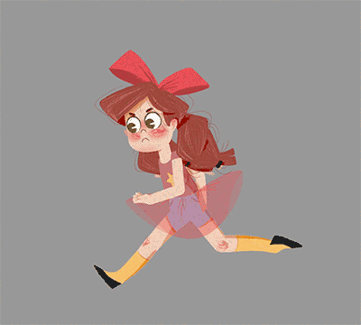
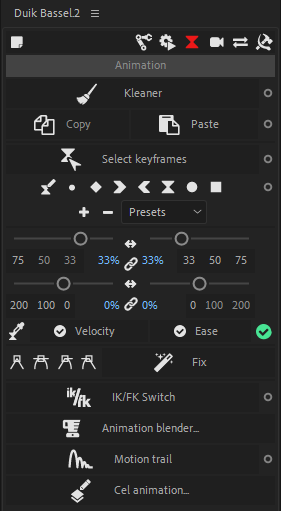

Animation
Animation

Design by Justine Cunha, animated by Duduf
Duik Bassel provides a lot of tools very useful for character (and other) animation.

 The Kleaner is a tool to automatically clean the selected animations.
The Kleaner is a tool to automatically clean the selected animations.- You can easily copy and paste animation to and from multiple layers, with some useful options.
- Keyframe tools: these are the tools you may need all the time when you are actually animating.
 IK/FK Switch is an easy way to switch between IK and FK during the animation, if the layers have been rigged by Duik Bassel.
IK/FK Switch is an easy way to switch between IK and FK during the animation, if the layers have been rigged by Duik Bassel. Animation Blender is a nice shortcut to list and animate with markers on compositions previously rigged by the Animation Blender.
Animation Blender is a nice shortcut to list and animate with markers on compositions previously rigged by the Animation Blender. The Motion Trail tool draws the trajectory of any layer in a shape layer, and can make trails behind (or in front of) them.
The Motion Trail tool draws the trajectory of any layer in a shape layer, and can make trails behind (or in front of) them.- Cel Animation is a tool to animate frame by frame using the paint effect in After Effects.